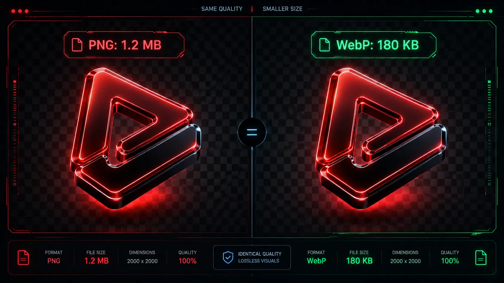

For over two decades, web designers have relied heavily on a single format whenever they needed an image with a transparent background: the PNG (Portable Network Graphics). Whether it was a corporate logo, a floating UI icon, or an e-commerce product cutout, the PNG was the undisputed king of web graphics.
However, there has always been a massive drawback to PNG files: they are incredibly heavy. Because they utilize older lossless compression techniques, a simple transparent logo can easily balloon to several megabytes, dragging your website's load times down into the dirt.

The Beginner's Dilemma: Transparency
Many beginners to web development and blogging operate under a common misconception: "I have to use PNGs because JPEGs don't support transparent backgrounds."
While it is absolutely true that standard JPEGs cannot render transparency (they will force a solid white or black background), WebP changes the game entirely.
"The WebP format natively supports the Alpha Channel. This means it can render perfect transparency, just like a PNG, but at a fraction of the total file size."
How WebP Handles Transparency
When you use a WebP converter to process an image, it utilizes an "Alpha Channel" to define which pixels should be seen through. What makes WebP revolutionary is that it allows you to use lossy compression on the actual image colors, while maintaining perfect, mathematically precise transparency in the background.
The result? You get a graphic that looks identical to a high-quality PNG, behaves exactly like a PNG on your web page, but weighs up to 50% less.

Step-by-Step Conversion Strategy
When converting PNGs, the primary goal is to preserve the crisp, sharp edges around your transparent graphics (like the edges of text in a logo) while lowering the file size. Here is how to do it safely using Webp Moder by Shekh:
- Upload Your Master File: Start with the highest quality PNG you have. Drag and drop it directly into our browser-based tool.
- Set a Higher Quality Slider: Because PNGs often feature sharp vector-like graphics or text, it is highly recommended to keep the quality slider slightly higher than you would for a standard photograph. Aim for the 85% to 95% range.
- Verify the Edges: Look at the instant preview. Check the edges of your logo to ensure they haven't become blurry or "artifacted".
- Download: Click convert. Even at a high 95% quality setting, the resulting WebP file will typically be significantly smaller than its PNG counterpart.
Ditch Heavy PNGs Today
Shrink your logos and UI icons without losing their pristine transparent backgrounds.
⚡ Upload PNG to ConvertFrequently Asked Questions
Will my transparent background turn white?
No. When you convert a transparent PNG using our tool, the WebP format natively recognizes and preserves the transparency (Alpha channel). The background will remain completely see-through.
Can I replace all my PNGs with WebP?
For web delivery, yes. However, it is always a best practice to keep your original, uncompressed PNG files securely stored on your local hard drive as "Master Files" in case you ever need to edit them in the future.
Why are my WebP logos sometimes larger than my PNGs?
If you have an extremely simple, tiny graphic (like a 16x16 pixel icon with only two colors), older lossless formats might occasionally be smaller. However, for 99% of modern web graphics, logos, and product photos, WebP will be drastically smaller.
Conclusion
You no longer have to choose between having beautiful, transparent web graphics and maintaining a fast website speed. By transitioning your media pipeline to utilize WebP formatting, you get the absolute best of both worlds. Grab your heaviest PNG files, run them through Webp Moder, and instantly see the bandwidth savings for yourself.